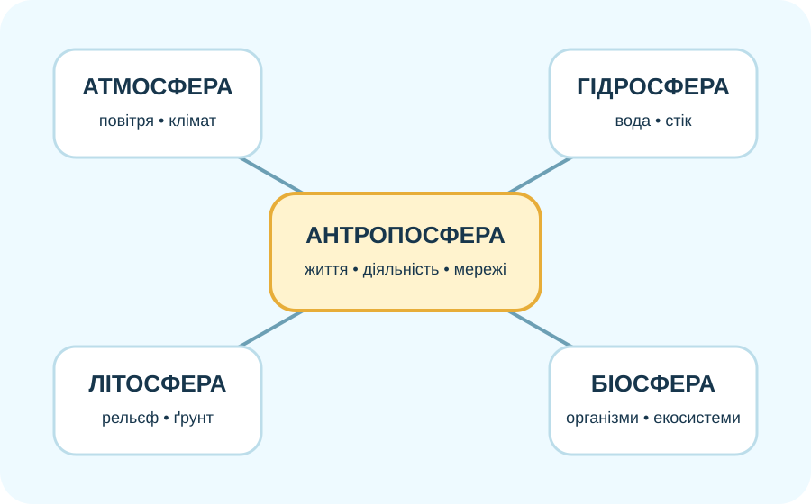

1. Чи видно антропосферу з космосу?

NASA/Goddard: нічні вогні показують просторовий рисунок освітлених поселень і транспортних мереж. Темрява не означає «немає людей».
Спочатку — лише те, що видно
Який висновок найкраще підтримує знімок?
2. Антропосфера у Вашій місцевості: прочитайте карту
OpenStreetMap. Збільшуйте масштаб і шукайте не «міста», а різні функції простору: житло, дороги, поля, водойми, зелені зони, промислові та сервісні об’єкти.
Класифікуйте слід діяльності

Один об’єкт майже завжди одночасно пов’язаний з кількома оболонками Землі.
3. Поселення — це не просто крапки на карті
За гармонізованим підходом DEGURBA у 2020 році близько 44% населення світу жило у містах; ще 36% — у містечках і передмістях, 20% — у сільських районах.
Джерело: UN/Our World in Data, класифікація за щільністю та розміром поселення.
Чому цифри урбанізації бувають різні?
Бо «місто» можна визначати адміністративно або за однаковими міжнародними критеріями щільності й чисельності. Порівнюючи країни, перевіряйте метод.
Міні-аналіз даних
Уявіть дві території однакової площі:
50 000 жителів; суцільна щільна забудова; багато доріг.
50 000 жителів; населення розсіяне по селах і хуторах; між ними великі поля.
Чи однакова в них антропосфера?
4. Симулятор: як змінюється територія, коли зростає людське навантаження?
Навчальний індикатор поверхневого стоку
Що ця модель НЕ доводить
Вона показує напрямок можливого зв’язку: більше непроникних поверхонь часто означає швидший поверхневий стік. Але реальний ризик підтоплення залежить ще від опадів, рельєфу, ґрунтів, дренажу й стану водойм.
5. «Земля для людей чи людина для Землі?» — перевіряємо аргументи

Міський простір
Концентрація житла, послуг, транспорту та інженерних мереж.

Аграрний простір
Людина перебудовує рослинний покрив, ґрунти, водний режим і потоки речовин.

Енергетичний простір
Будь-яка енергетична система має просторовий слід і потребує ресурсів та інфраструктури.
Конструктор буклета «Світ, в якому я живу»
6. Коротке відео: людська діяльність у нічному світлі
NASA Goddard. Під час перегляду випишіть: 1) що саме бачить супутник; 2) які висновки з цих даних можливі; 3) де потрібні додаткові джерела.
7. Тепер теорія: що називаємо антропосферою?
Антропосфера — частина географічного простору, де живе й діє людина та де проявляються результати цієї діяльності. Вона включає поселення, транспортні й інженерні мережі, сільськогосподарські землі, виробничі території, місця відпочинку, інформаційні та соціальні зв’язки.
Антропосфера не існує окремо від атмосфери, гідросфери, літосфери й біосфери. Людина використовує ресурси, змінює потоки води й речовин, трансформує земну поверхню — і водночас залежить від клімату, води, ґрунтів, рельєфу та живих організмів.
8. Підсумок CER
Проблема: «Чим більше в території забудови, тим вона менш природна, а отже — завжди гірша для життя людей».
9. Домашнє завдання
§51. Створіть одну сторінку лепбука/буклета «Світ, в якому я живу»: карта або схема місцевості + 3 прояви антропосфери + 2 зв’язки з природними оболонками + один прогноз до 2040 року. Для кожного прогнозу напишіть, який факт змусив Вас так думати.
Електронний підручник / ВШО →10. Тест — 10 балів
Джерела й геодані
NASA SVS — Earth’s City Lights • NASA Black Marble • OpenStreetMap • Our World in Data / UN DEGURBA — Urbanization • Global Human Settlement Layer (European Commission).
Для навчальних висновків завжди відрізняйте: що джерело вимірює безпосередньо, що оцінює моделлю, а що є Вашою інтерпретацією.